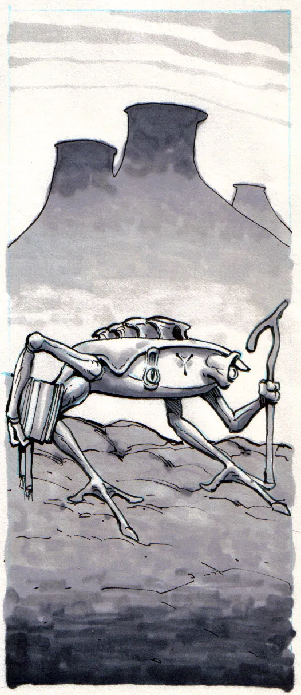
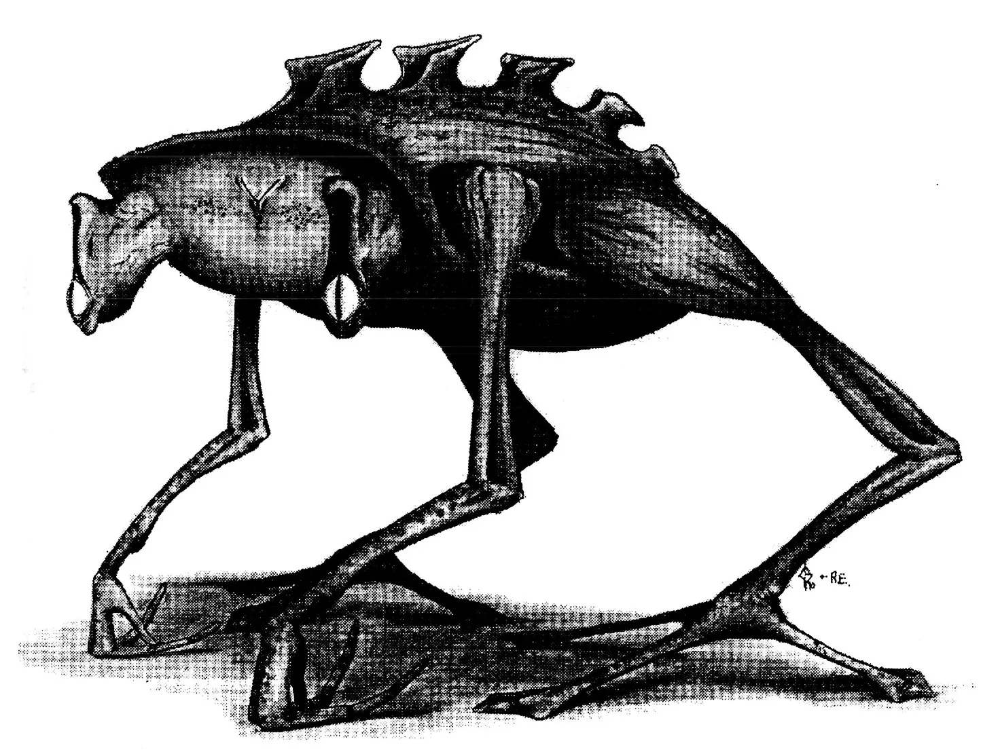
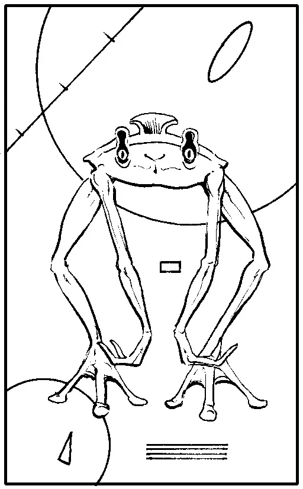
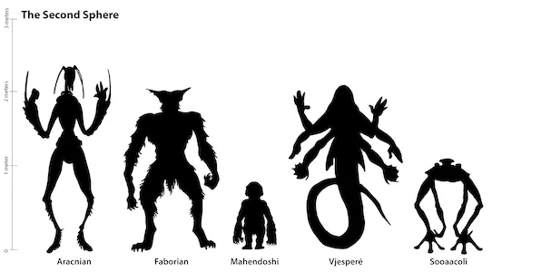

Physiology
The Sooaacoli are an alien and unique race although they may have two legs, two arms and two eyes. The Sooaacoli structure seems never to follow any anatomic rules, Their curved bones and their dense muscle tissues make them the subject of study and unfortunate under estimation. All over their body are areas of compact muscle tissue which serve as their structure for movement, but the Sooaacoli have developed a bonus to normal muscle and that is the use of curved bones to push and pull. Circular movements are caused by bones similar to the radius and the ulna in terrains but this movement is rather new to the Sooaacoli structure. It seems during studies of ancestral Sooaacoli remains, that the forearm over millions of years is splitting into two separate bones. Even though the split in the forearm is only up to 24 cm given a long time it is estimated at 15 million years the Sooaacoli will have joints that can fully rotate. The upper bone structure of their Sooaacoli is basically a frame where organs and bones can attach but along the back are seven protruding bones that serve no real purpose, but originally served as a form of protection to earlier Sooaacoli races. The Sooaacoli are herbavours and lack salvetory glands but they overcome this problem by eating very moist food or by manually crushing the food and adding water to it. an organ in the female sooaacoli located 5 cm below the first heart produces the egg and has a direct link to the bloodstream. these cells cannot divide to form an actual sooaacoli unless fertilized by a male. The sperm and the chemical cause the female organ to close until the live sooaacoli baby is produced. A baby Sooaacoli can stand after birth but other than this it needs parental attention to survive. It is believed that primitive Sooaacoli were once similar to aquatic turtles found on Earth. In all the physiology of the Sooaacoli differ from most other races but fit into the unified bipedal structure (U.B.S.) which is now being proved the most efficient shape for an intelligent life form.

Senses
The most interesting thing about the Sooaacoli by far is their speech. The Sooaacoli do this by using two ears that can pick up sound as finite as 30 000 Hz to 1Hz and then reproduce it through their speech organ. The Sooaacoli like sweet *sugary food and have an ability to tell if a food product is sweet and delicious. This taste is important to the Sooaacoli because the sugars are what their primary food compound and this ability can tell them if it is fresh or poisoned. Telekinetic energy is found among some race to high degree and it seems the Sooaacoli have the ability but never use it in everyday life. Psychokinesis also follows the same path, but according to the Sooaacoli documented history there was a race of people that used these powers;

Speech
The Sooaacoli can reproduce sounds so well an observer watching two Sooaacoli having an energetic discussion could only tell that there are two voices but wouldn't know who they belong to. if you can imagen ten Sooaacoli talking about past hunting trips, the stories would be so detailed and accurate, unless one of the Sooaacoli dicided to add lib his trip by adding a few creatures to impress his colleagues. Surrounding this bone are the same cells in the ear, but when electrical current runs through the stack coling cells it charges the bone and produces sound which with the aid of a few membranes the sound is then amplified.
Social / Culture
The most interesting thing about the Sooaacoli by far is their speech. The Sooaacoli do this by using two ears that can pick up sound as finite as 30 000 Hz to 1Hz and then reproduce it through their speech organ. The Sooaacoli like sweet *sugary food and have an ability to tell if a food product is sweet and delicious. This taste is important to the Sooaacoli because the sugars are what their primary food compound and this ability can tell them if it is fresh or poisoned. Telekinetic energy is found among some race to high degree and it seems the Sooaacoli have the ability but never use it in everyday life. Psychokinesis also follows the same path, but according to the Sooaacoli documented history there was a race of people that used these powers; The Sooaacoli can reproduce sounds so well an observer watching two Sooaacoli having an energetic discussion could only tell that there are two voices but wouldn't know who they belong to. if you can imagen ten Sooaacoli talking about past hunting trips, the stories would be so detailed and accurate, unless one of the Sooaacoli dicided to add lib his trip by adding a few creatures to impress his colleagues. Surrounding this bone are the same cells in the ear, but when electrical current runs through the stack coling cells it charges the bone and produces sound which with the aid of a few membranes the sound is then amplified.

Special Abilities
Sex
Life Span
Planet: Anacro Novello Gravity: .8
Second Sphere - Racial Size Comparison Chart

---